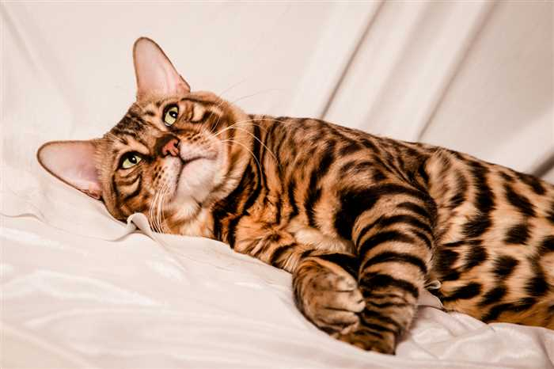
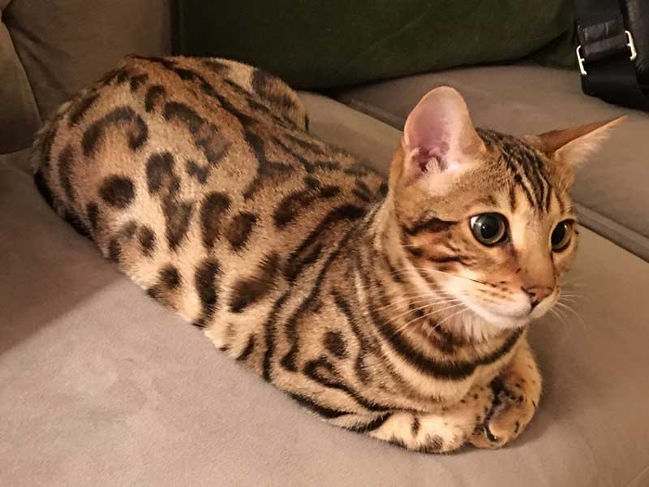
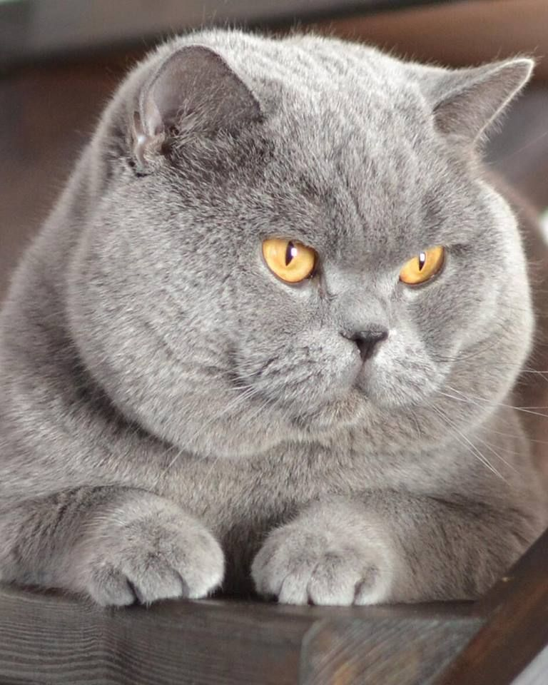
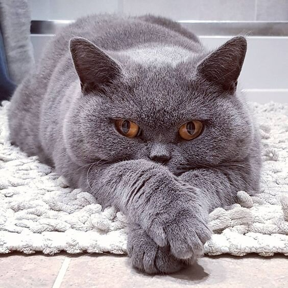
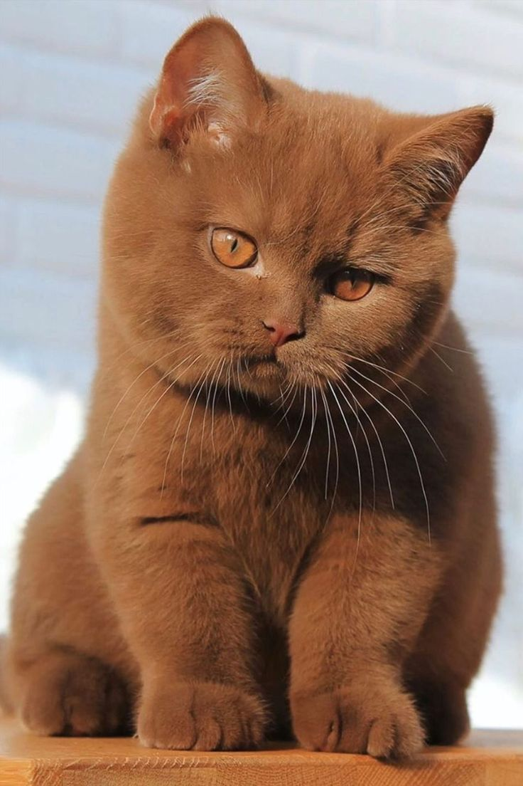
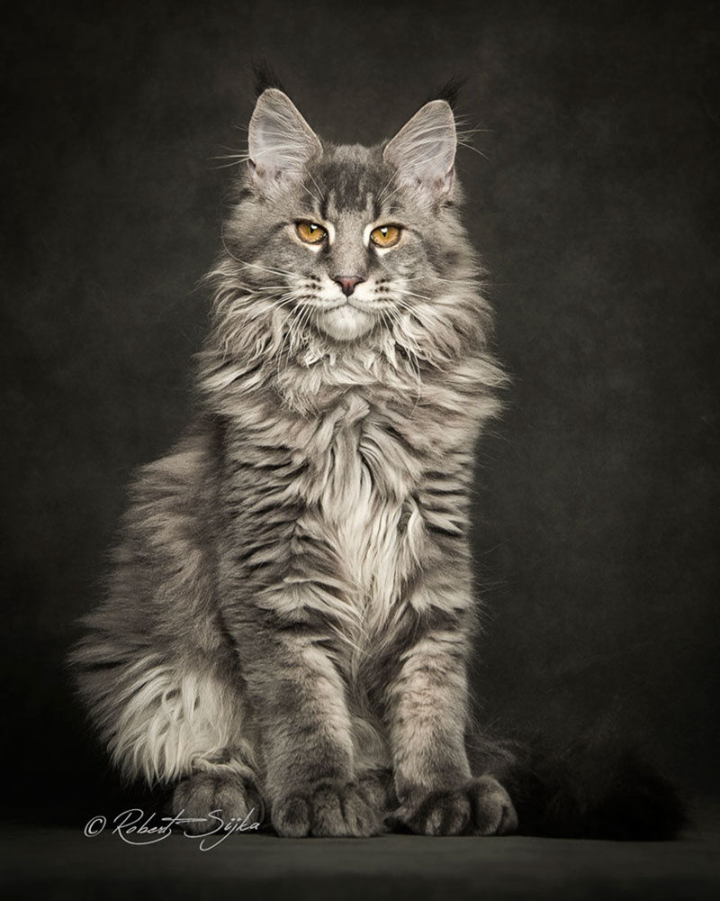
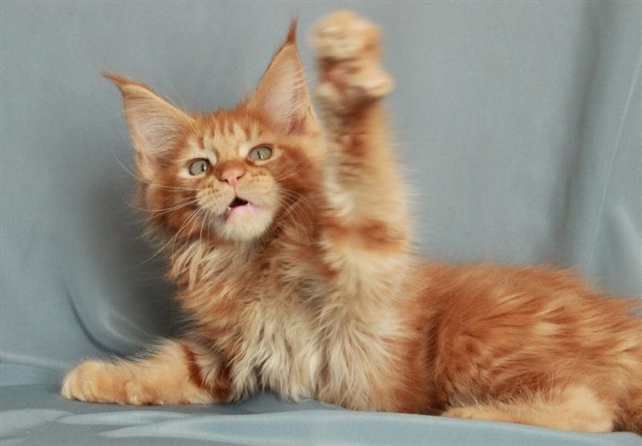
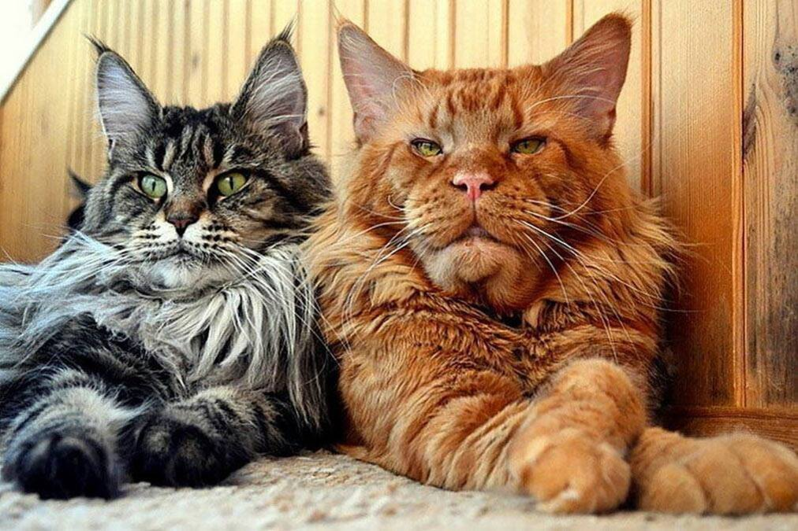

очаровательные кошки
факты о кошках
- Уникальный отпечаток носа: У каждой кошки есть уникальный отпечаток носа, подобный отпечатку пальца у человека. Нет двух кошек с абсолютно одинаковым носом.
- Пятикратный прыжок: Кошки могут прыгать на высоту до пяти раз своей высоты. Это благодаря гибкости и силе их задних ног.
- Способность к видеть в темноте: Кошки имеют невероятную способность видеть в темноте благодаря особым клеткам в их глазах, называемым "стержневыми клетками". Они могут видеть при очень слабом освещении, что делает их отличными ночными охотниками.
- Голосовая гибкость: Кошки могут производить более 100 разных звуков, в то время как у собак их всего около 10. Они могут мяукать, мурлыкать, фыркать, шипеть и даже "разговаривать" с владельцем.
- Вертикальное отображение мира: Кошки имеют предпочтение к вертикальному отображению мира. Их глаза расположены так, что они лучше видят движущиеся объекты вверху, что объясняет, почему они так любят забираться на высокие места.
- Раскачивание ушей: Кошки могут развернуть уши на 180 градусов, что помогает им слушать звуки вокруг себя и даже определять их направление.
- Подсказка в хвосте: Подсказка в хвосте кошки может давать много информации о ее настроении. Например, хвост, поднятый вертикально, обычно означает, что кошка радостно приветствует вас.
- Особый язык тела: Кошки используют свой хвост и уши, а также позу своего тела и морщины на лице, чтобы передавать свои эмоции и намерения.
коты в естественной среде обитания
котья галерея
бенгальские котики


британские котики



Мейн-куны


